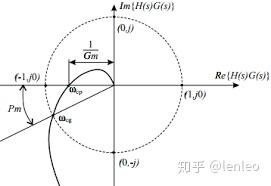
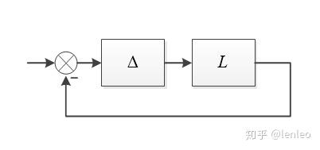
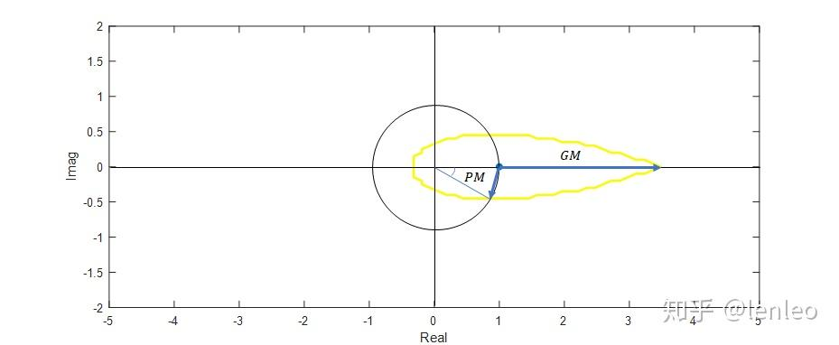

Disk Margin理论
线性系统稳定裕度最常见的表征参数是幅值裕度（GM，Gain Margin）和相位裕度（PM，Phase Margin），有时也会考虑时间延迟裕度（Time Delay Margin）。
幅值裕度GM和相位裕度PM各自只考虑了幅值或者相位的单一变化：GM表示开环系统增益变化多少倍时，相位变为-180°；PM表示开环系统相位增减多少时，增益开环系统增益变为1。但是如果开环系统的增益和相位同时发生变化，需要一个统一的指标来衡量裕度。

Margin Disk盘稳定裕度就是表征开环系统增益和相位同时发生变化时，系统稳定性的范围。
假设开环回路幅值和相位同时发生变化，即：

假设系统开环传递函数为：
黄色内部为其稳定区域。
